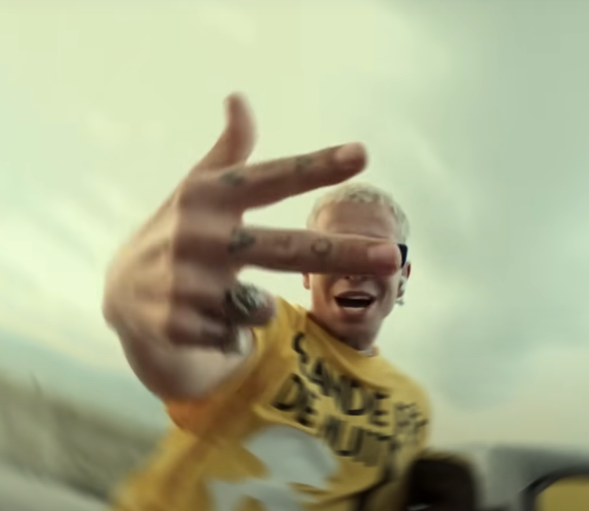
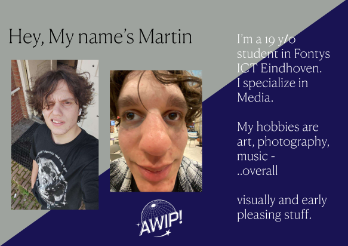

Professional Skills - Personal Website
- Project Organisation - Idea Research
- Communication and Reporting
- Exploratory Research
- Feedback and Reflection
- Core values
Project Organisation - Idea Research
For this project I was greatly inflenced by the blend of Worldwide Culture which I obsurved through my lenses as a native Bulgarian, diging into the world I've been so familiar with until now, and trying to interpret it and express it through any means I find suitable. My story is hidden in both visual and audible ones, with some of my "artworks" which will soon be displayed in a "Gallery" section on this website.
I dug and drew inspiration from websites I felt like excited me and so these are the most important ones, that brought the website to life:

I really like the layout and feeling of this website and the feeling of calmness it brings. One of my biggest inspirations for the choices and layout of the website as you can see in the video and layout similarities.
 


It even allowed me to experiment with the background and add these cuts I made from a music video that inspired me further to head in this direction, with it being from a prominent Bulgarian artist named Virgo, influencial for our music scene because of his genre bending sound. By furthering my expression through familiarity I was able to be even more creative with the website's development down the road.


Another two big contibutions to the shaping of my idea for the website were 555soul clothing website with a really interesting blend of old school and y2k elements, as well as Go!Club, music group from Bulgaria with pastel-like Y2k elements in both their music and visuals.

Communication and Reporting
Early pitches:


With Each feedback the pitches got better and better and by going back to the foundations - the structure - and ensuring those are solid, I managed to improve, because I was seeking feedback and adressing what was going good where I was not as efficient - I was actively looking how to improve:


Latest pitches:
 


Exploratory Research
Feedback and Reflection

Core values
Technical Skills - Personal Website
- Iterative process
- Interactive prototypes
- Target group
- Feedback and Reflection
- Goals and Reality - What was I able to learn
Iterative process
Interactive prototypes


Target group
Feedback and Reflection

Goals and Reality - What was I able to learn
Reflection - Personal
- What did I do better this time?
- What I would've done better?
- What I learned?
- Feedback and Reflection
- Grading Myself
What did I do better this time?
What I would've done better?
What I learned?
Feedback and Reflection
Grading Myself
Professional Skills - Group
- Project Organisation - Idea Research
- Communication and Reporting
- Exploratory Research
- Feedback and Reflection
- Core values
Project Organisation - Idea Research
Communication and Reporting
Exploratory Research
Feedback and Reflection
Core values
Technical Skills - Group
- Project Organisation - Idea Research
- Communication and Reporting
- Exploratory Research
- Feedback and Reflection
- Core values
Project Organisation - Idea Research
Communication and Reporting
Exploratory Research
Feedback and Reflection
Core values